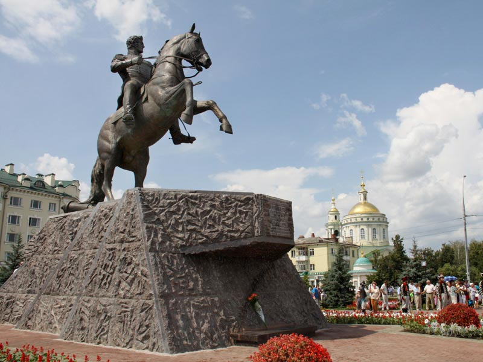

Город воинской славы - Орел.
Российский город Орёл расположен на обоих берегах притока Волки - Оки. За свою многолетнюю историю (Орлу более 450 лет), город неоднократно вставал на пути противника, давая отпор захватчикам.В период Великой Отечественной войны город почти 2 года был в оккупации. 3 октября 1941 г. фашисты, обойдя Брянский укрепрайон, захватили Орел. Вокруг города на 15 км была объявлена запретная зона, на территории Орла враг организовал лагерь, как для военнопленных, так и для и мирного населения. Но всё же орловцы создавали подпольные группы, направленные для борьбы с противником. Орел освобожден в ходе Курской битвы в результате операции «Кутузов» 5 августа 1943 г. Немецкая оборона была пробита совместным ударом Центрального, Западного и Брянского фронтов.В апреле 2007г. Указом Президента РФ Орлу присвоено почетное звание «Город воинской славы».
